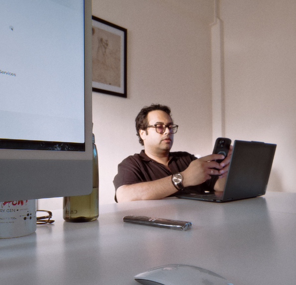
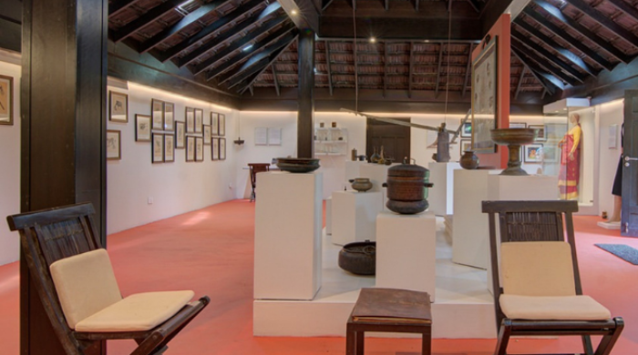
Managing Partner, NYUCT Design Labs
Manojeet loves blending multidisciplinary practices to build ventures, brands,
innovations and destinations. A belief and lived experience in the power of venture
design, distributed innovation and interdisciplinary collaboration led to the creation
of NYUCT Design Labs.
Its adventures have spanned across industries - Venture Capital, Legal, Healthcare, Government, Travel, Tourism, Hospitality, Education, Not for Profit, Fashion, Retail, Lifestyle, Impact and Real Estate - and is helped in this pursuit by a collective wisdom of more than 188 years amongst core partners who have led and executed on scale.
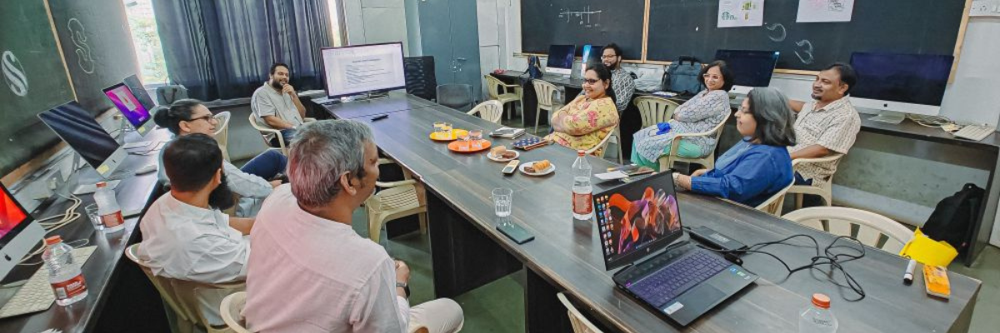
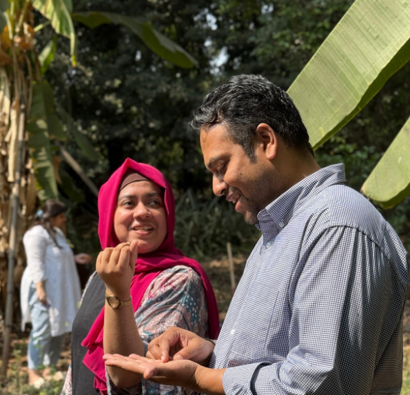
Manojeet has been the Global Head of Brand & Marketing at IHCL (Vivanta by Taj, Gateway, Taj Leisure SBU), headed the Global Strategic Alliances and Partnerships function, and later served as the Group CMO of the retail led real estate group Phoenix Limited. A business school alumnus of XIM (PGDM’ 97), a certified Tata Business Excellence Leader, Balanced Score Card practitioner and a lifelong student of Economics, Manojeet loves joining the dots. Some dots joined to design think and make Vivanta by Taj, the world’s 3rd best hospitality brand in 2014 (Conde Nast US Travellers’ Awards) and hailed as a "stroke of genius" by Wallpaper UK. Not to mention awards & recognition at innovation and design forums (ITB Berlin Innovation, LHW Prague for Program Innovation, Tata Business Excellence, ).
This journey also spanned the creation and roll out of the ambitious Brand Architecture at IHCL (a Harvard Business School case study).
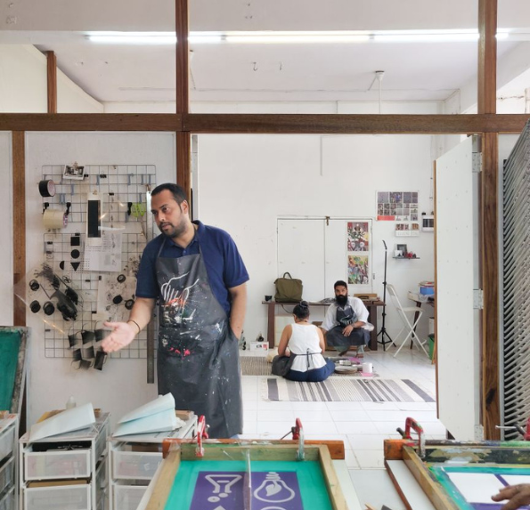
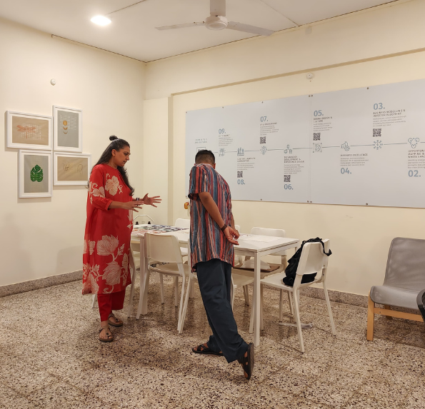
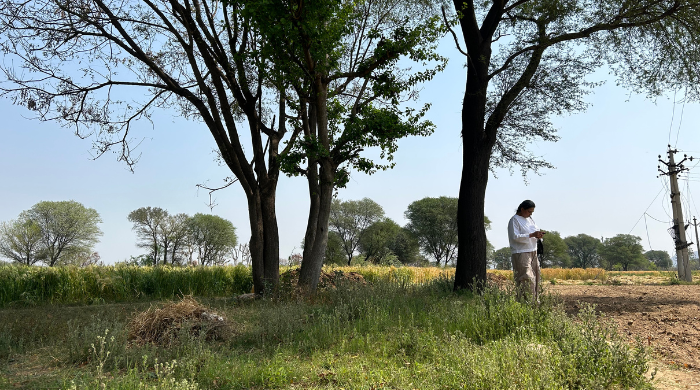
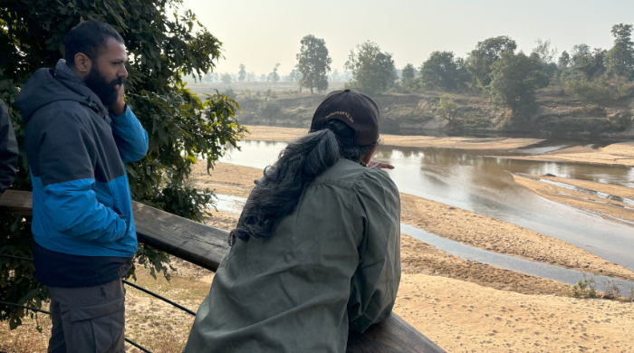
Managing Partner, NYUCT Design Labs
Pranali has been a multidisciplinary
practitioner intersecting art, culture and design and a co-founder of NYUCT Design Labs.
An alumnus of the prestigious Sir JJ School of Arts, she leads the design and culture
cell at Edible Ventures.
Prior to co-founding NYUCT Design Labs, Pranali was a founding member at Saffron Art, the global platform for art in India and which revolutionized art e-commerce in the country. This was followed up by decades of experience in building up institutional and private art collections for reputed MNCs (Rabo Bank Mumbai, Morgan Stanley – NY Broadway Office, Aicon Art Gallery – NY, ABN Amro, Mumbai, Citi Bank, Mumbai), private collectors and luxury hospitality chains. She was part of the Art Appraisal & Restoration Consultancy for Taj Mahal Mumbai for their Centenary year celebrations as also for Tata Institute for Social Sciences. Pranali has led and curated as program director several global shows including Art Chennai, Hope for Haiti and more.
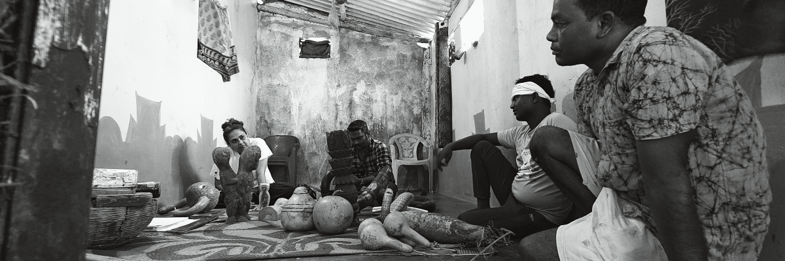
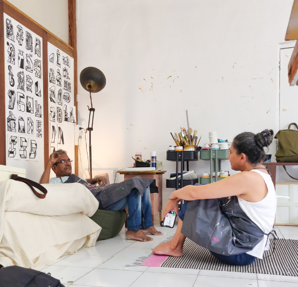
Her formative years were dedicated to the making of some of the finest handmade rugs and Kelims in India, in her family run exports business. Her later assignments and projects have included a slew of innovative experience design and cultural, spatial projects for brands like the Taj, Oakwood Premier and curating Chennai’s premier Art festival – Art Chennai which express a profound grasp of aesthetics and a lifestyle quotient.
Widely travelled, an advocate of the super local, she is a serious believer in the power of culture and design to deliver impact, market leadership and conceptualise design led experiences.
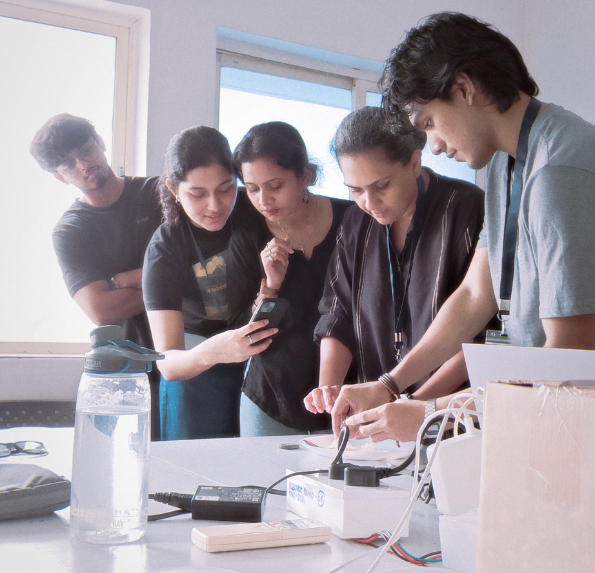
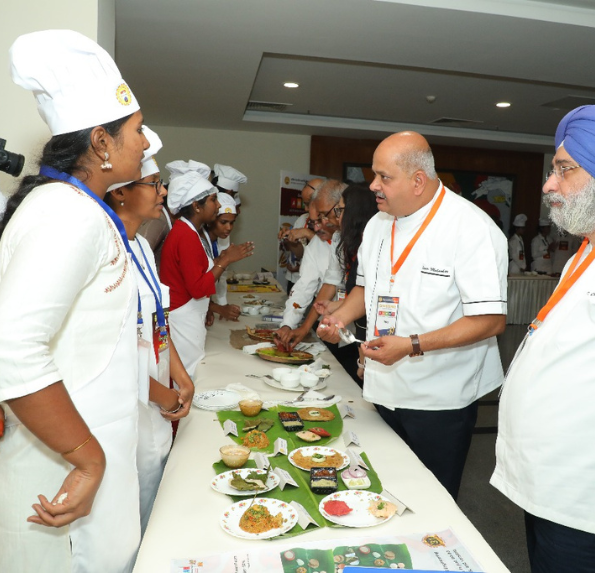
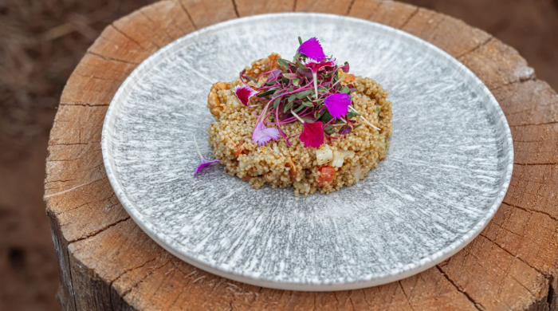
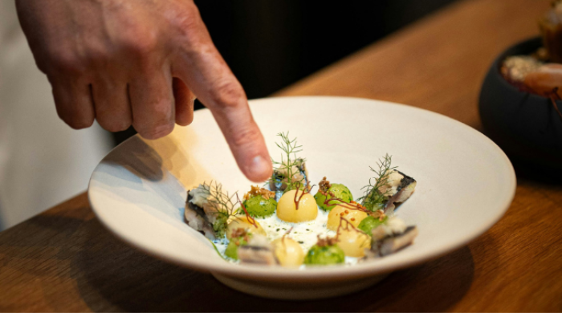
Patron-Chef & Product Development Lead
Dr. Samir has been both a seasoned
master-chef, and food venture coach. He has led and managed scale and complexity across
both mandates.
With decades of excellence and experience in leading culinary operations, teaching, training and onground research, and with a PhD. in Entrepreneurship & Entrepreneurial Studies, Samir works with clients to conceptualize new ventures, restaurants and concepts. Having worked across global brands and businesses like The Marriott Group (London), The Taj (The Indian Hotels Company Limited) and venture building a QSR business for a large Nagpur based business group, gives him the insights and expertise to manage both entrepreneurial forays as also large-scale global operations.
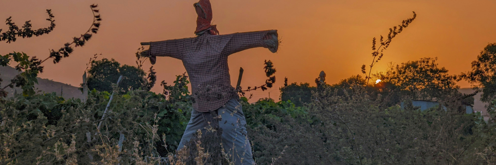
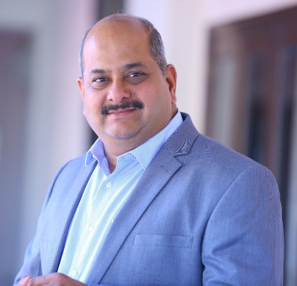
By intersecting culture, food systems and business design, Samir brings conceptual depth & executional clarity to the table. Guiding you across menu engineering, product development and operational planning. He also writes the occasional column for reputed publications like The Hindu
Samir's doctoral research has been in the entrepreneurship of upscale restaurant ventures, and been a part of active work in the field of cuisine management and restaurant entrepreneurship. Samir brings refreshing concepts to a world where food is the new adventure.
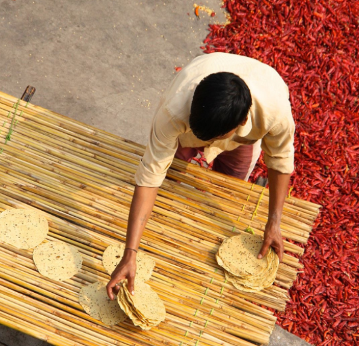
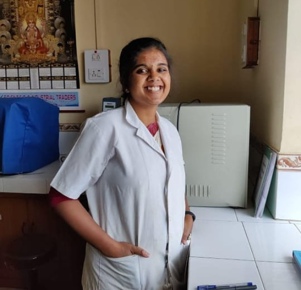
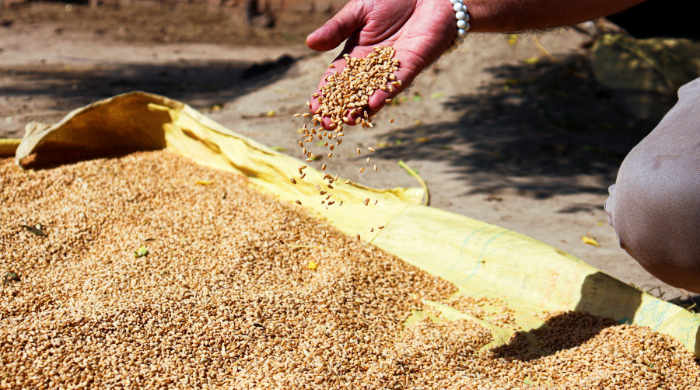
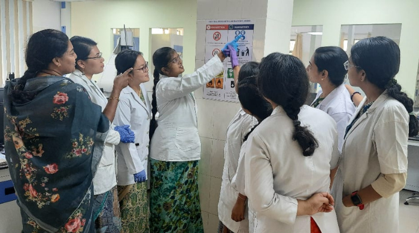
Product Development and Research
Sai is a food scientist with a doctorate
in Millet based RTE and food development, a serious super-grain researcher, and
entrepreneur in residence.
With over five years of deep research and product development experience, and an inventive approach, Sai bridges science and sustainability transforming traditional Indian millets into modern functional foods.
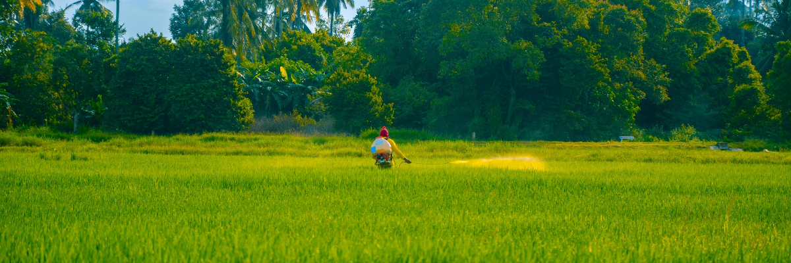
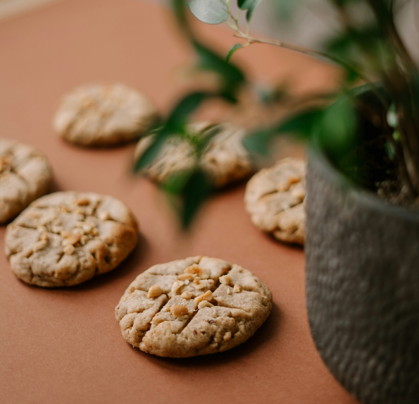
She has worked in collaboration with CSIR-CFTRI, Mysuru, and published extensively in reputable journals, including Applied Food Research, Food and Humanity and the Journal of Culinary Science & Technology. A maker-talent, Dr. Sai has been the winner in the AICTE AMRUT Millet Recipe Competition (2024) and the Ideathon on Multi-Millet Flakes, Millet Confluence (2023).
Sai helps our founder clients and hospitality brands, shape and design their food adventures in the grains space as also leads the research and product development practice in the grains space. In short, she is our millet and grain princess :)
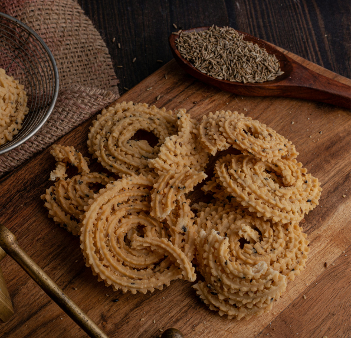
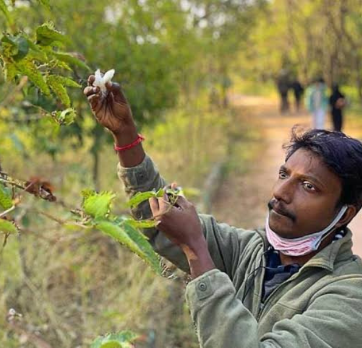
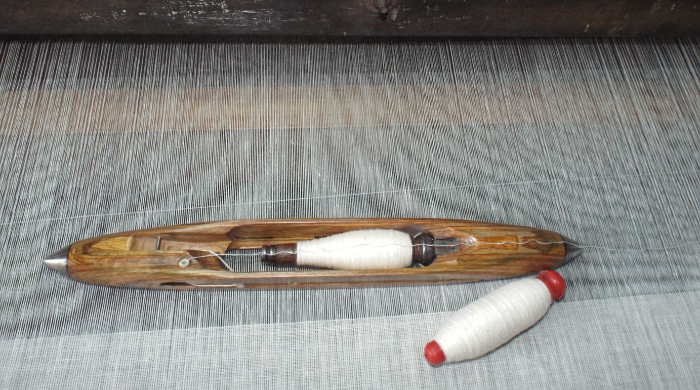
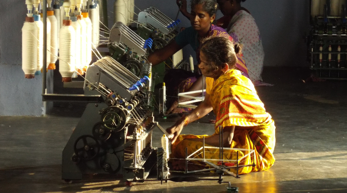
Product Development and Research
Swaminathan, and for us Swami, is a
bio-technologist cum entrepreneur who is passionate about preserving the agro diversity
of India, and runs a venture where he is regenerating India’s native cotton and agro
practices with rural communities. As an old-school, research based professional, he uses
contemporary science to understand the soil, seed, and the value chain thereafter.
With an M.Sc. in Biotechnology, and work in molecular diagnostics, Swami, a professional of both modern science and ancient sustainable practices, has worked across Kerala, Andhra Pradesh, Karnataka, Chennai and Madhya Pradesh on grass root incubation and micro venture development. With research based field work on paddy, millets, cotton, and while farming, spinning, weaving, Swaminathan has developed an excellent scientific temper.
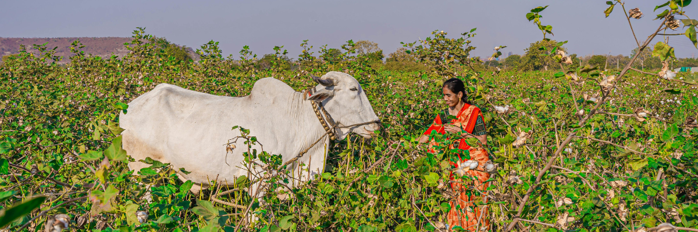
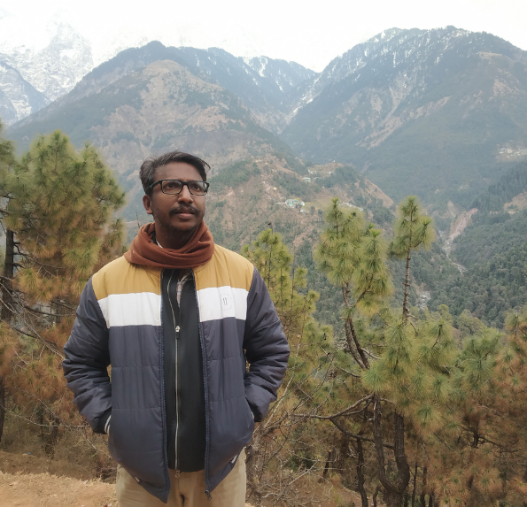
As a practising natural farmer, blending technology with ancient science, Swami believes that field learning, local community participation and nature are invaluable in creating products and sustaining practices that preserve our bio-diversity and indigenous heritage.
At Edible Ventures and as part of the NYUCT Design Labs collective, Swami brings the wisdom of the earth to organisations and founders.
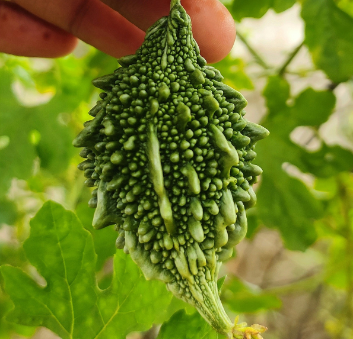
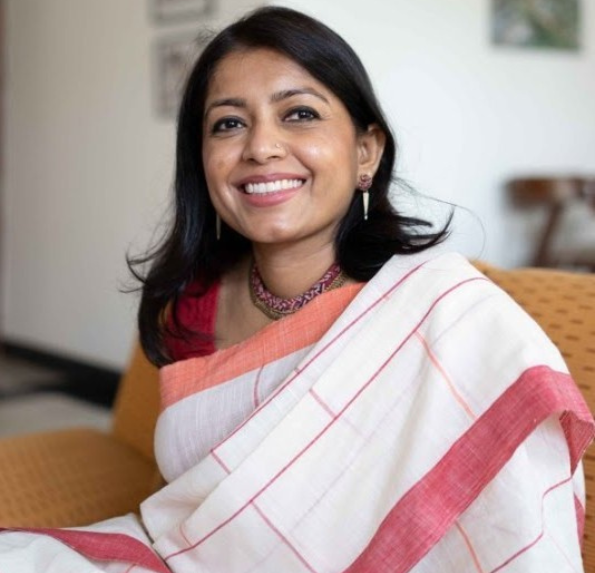
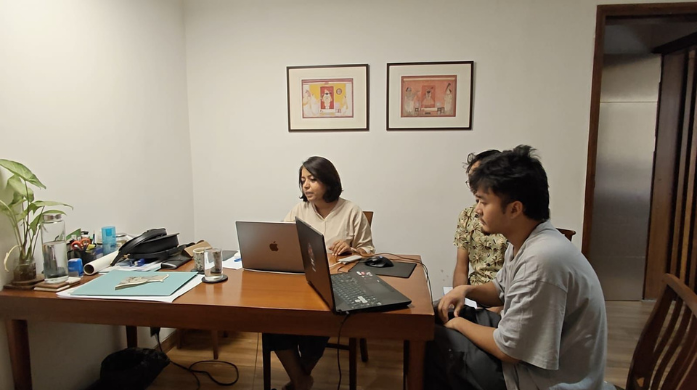
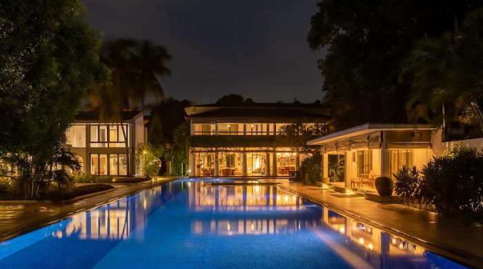
Lead Architect & Founder CGP
Priyamwada is an award-winning architect and founder of Common Ground Practice.
Registered with the American Institute of Architects (AIA), in New York State, USA,
she has more than a decade of experience in architecture and design with work
spanning 4 continents and 13 countries including Switzerland, Hong Kong, Singapore
and the USA.
Prior to establishing her practice in 2013, she spent 8 years in association with top architects around the world among which are Padma Shri recipient B.V. Doshi and architects of the World Trade Centre, Skidmore, Owings and Merrill LLP. Her design expertise ranges from master planning to residential and commercial buildings, museums and public institutions to ‘object’ design.
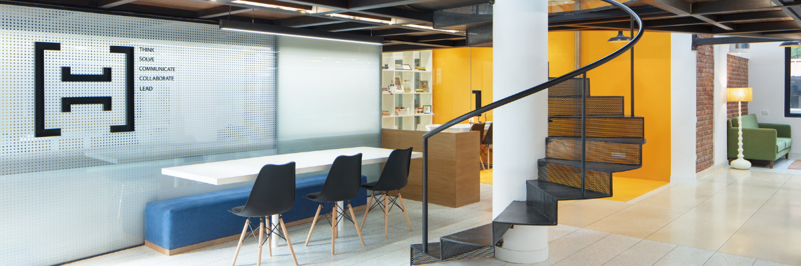
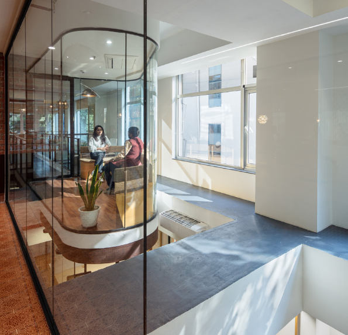
Priyamwada has taught at SPA, Delhi and served on the juries of Columbia University, New York; CEPT, Ahmedabad; SPA, Delhi and Sushant School of Art and Architecture, Gurgaon. Priyamwada completed her Masters at Columbia University in New York where she received the Honor Award for Excellence in Design and the Kinne Fellowship
Her multi-disciplinary practice operates in the fields of architecture, urbanism, interior design and research. With a focus on creating ecological, culturally specific and contemporary built environments, edible ventures and flagship restaurants give her much food for thought.
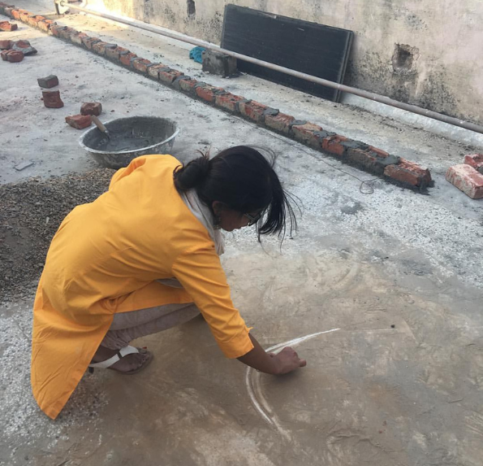
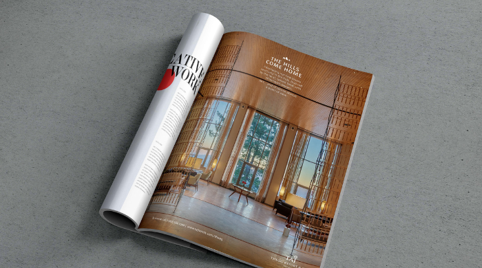
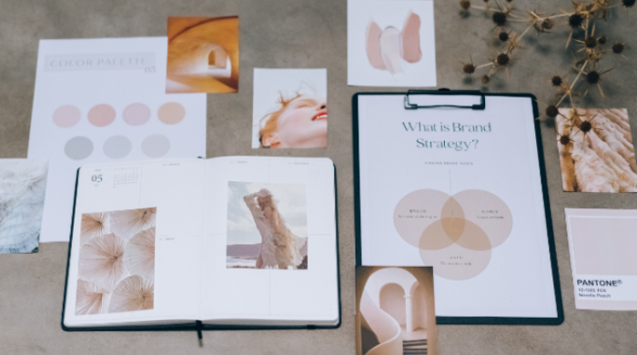
Hospitality Ventures & Business Growth
After leading iconic Indian and
International hospitality and lifestyle brands for over 15 years, Shifaali turned
founder with her hospitality branding and design venture, that seeks to move markets,
minds, and hearts.
Having cut her teeth and earned her stripes across some of the most formidable hospitality brands and global majors that include Taj, Marriott, AMA Stays, Taj Safaris, Singapore Tourism Board, with brand growth, business leadership and owner relation mandates. With a keen eye on consumer behavior trends, she incorporates market insights and future shaping trends, to shape initiatives that resonate with today’s discerning traveler.
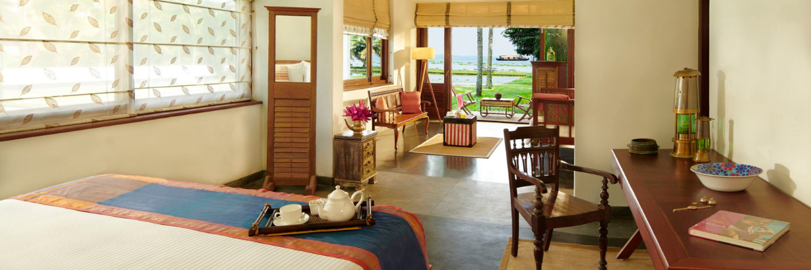
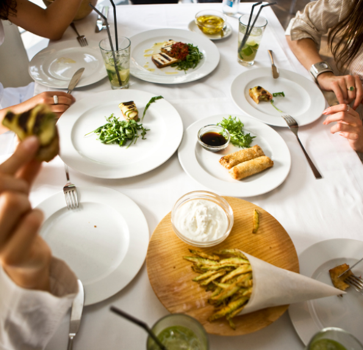
Her strength lies in hands-on, lived experience — having worked on assignments and projects that were built, scaled, and reimagined in the industry from within. Her passion lies in translating her life experiences and expertise into building and shaping brands that are culturally resonant, commercially astute, and built to endure. Having also worked on portfolios where she led the owner relations, business development and growth roles, she brings an astute understanding of investor and owner relationships.
Shifaali leads the business and brand relationships with founders and hospitality brands for Edible Ventures and brings a wealth of wisdom and experience in understanding the luxury restaurant and hospitality industry.
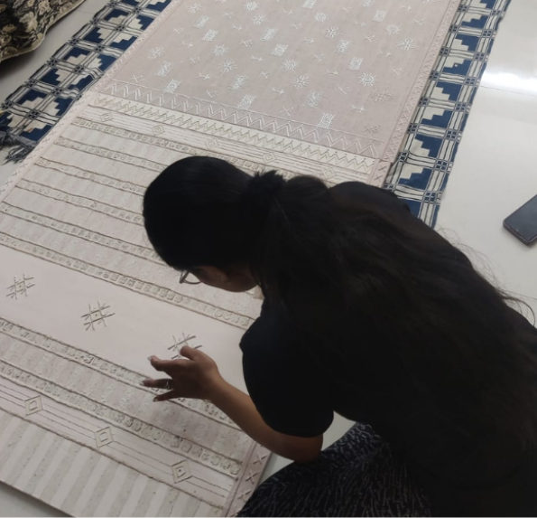
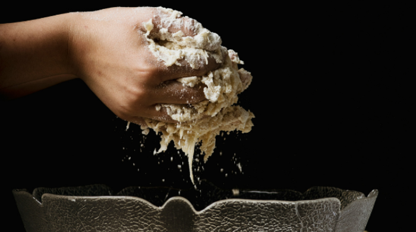
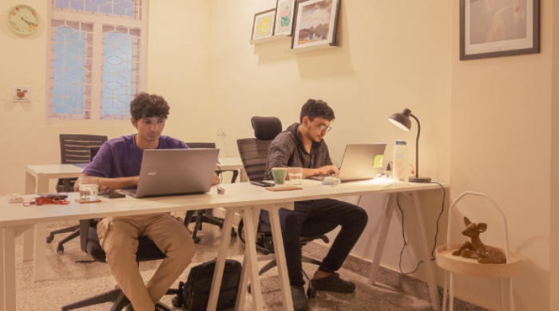
The multidisciplinary collective of NYUCT Design Labs is an extremely diversified pool of high-grade specialist professionals, creators, designers, digital builders, entrepreneurial makers and producers.
With hands-on capabilities developed and honed with diverse design and brand development projects, this is a team that believes that real making happens not just with theoretical inputs, but agile practical execution. Be it transformative experience design mandates, shaping products, blending technology and design into digital transformation or powering market development with integrated marketing, branding and content.
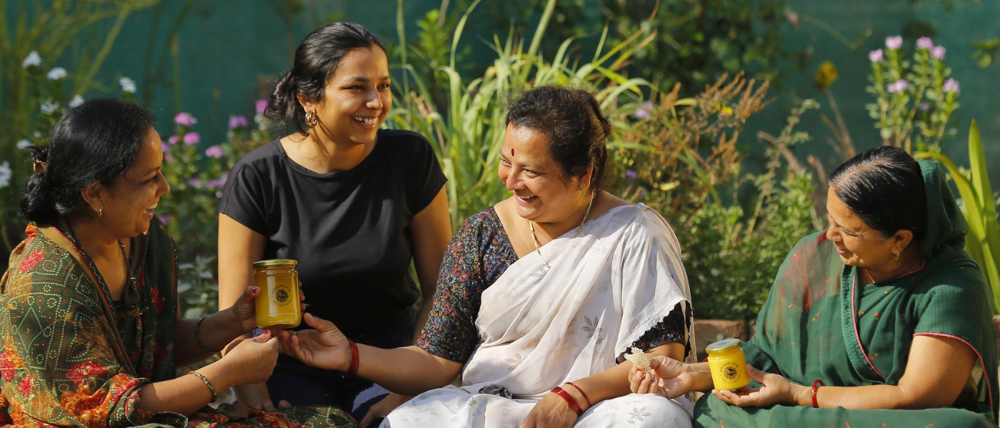
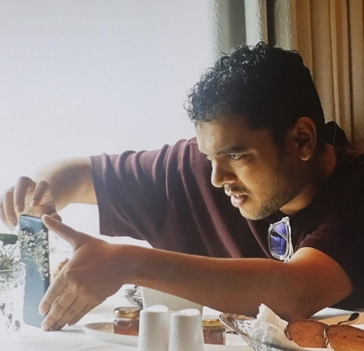
The community believes in the power of interdisciplinary collaboration, and brings to Edible Ventures a curated pool of domain experts in the food, hospitality & lifestyle space. These are based on relationships and partnerships cultivated over decades and across projects, by the founding partners.
Our makers community ensures that in the journey of transforming exceptional ideas into launch-ready edible ventures, nothing stays off the plate. And that you don’t build alone.
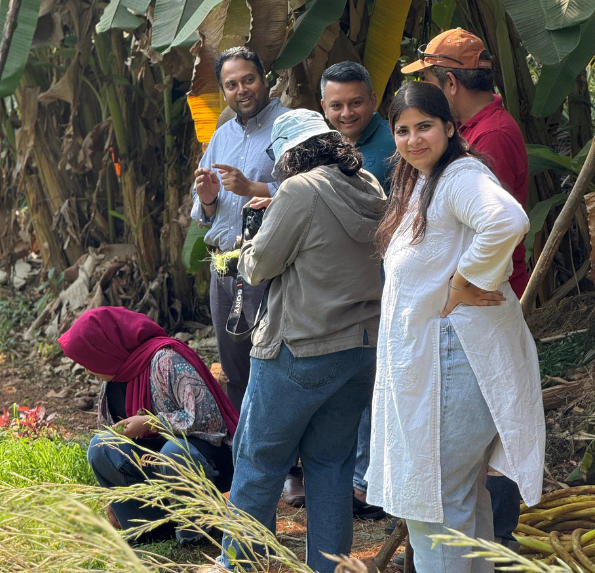
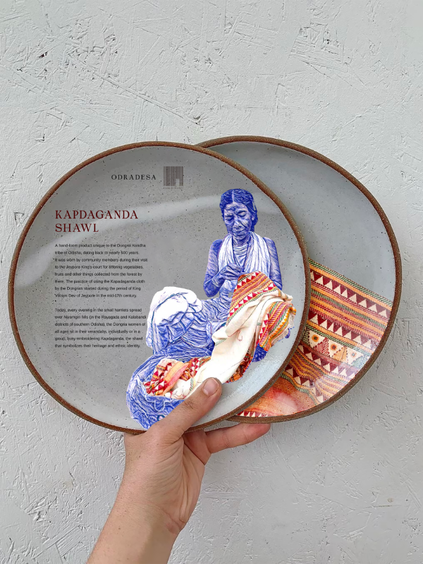
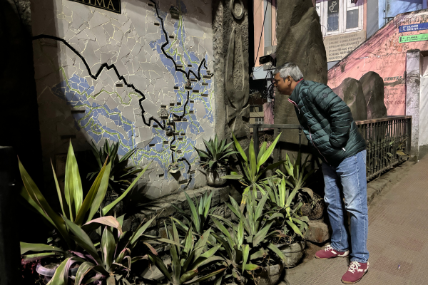